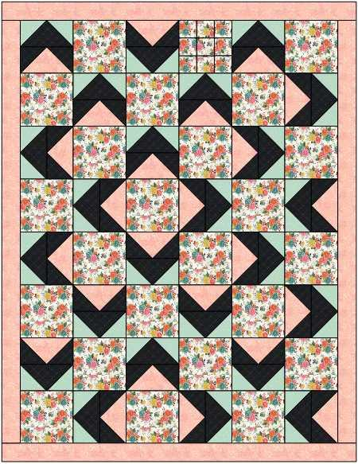

Charity quilt pattern
Walkabout with Borders
01Feature fabric · Block A
1 3/4 yards of feature fabric, print or solid.
- Cut six 10.5 in width-of-fabric strips.
- Subcut into twenty-four 10.5 in squares.
- Label these squares Block A.
02Flying geese · Block B
Use 1.5 yards each of two contrasting fabrics: one darker and one lighter. Both should complement Block A.
From each geese fabric
2 · 13 in x WOF strips
Subcut into six 13 in squares
2 · 11.5 in x WOF strips
Subcut into six 11.5 in squares
You will make 24 geese from each fabric for Block B.
Yardage & layout
Borders and finishing
Half-square triangle option
The pattern can also be made with 96 five-and-a-half-inch half-square triangles.
Inner border
1/3 yard
Cut eight 1.5 in width-of-fabric strips.
Combined yardage
If using the same fabric for geese, borders, or binding:
- Geese + inner border
- 1 3/4 yd
- Geese + binding
- 2 yd
- Geese + inner border + binding
- 2 1/2 yd
- Geese + outer border
- 2 1/8 yd
- Geese + outer border + binding
- 2 2/3 yd

Arrange feature blocks and flying geese in alternating rows; add inner and outer borders to finish.